著作目錄
| 《琴心》-散文小說合集 | ||
|---|---|---|
| 『琴心』是琦君的第一本書。三十年前，琦君也寫富有浪漫氣息的愛情故事。琦君不免想起古人的詞：『風懷老去如殘柳，一絲絲漸減春情，重寫綠窗舊夢，覺來渾不分明。』經過了三十年，重讀自己的第一本書，琦君已分不清是舊夢新愁。倒是回憶使她年輕，使她彷彿又回到那富於浪漫氣息的年代。 | ||
|
1953年12月 國風出版社 32開 / 180頁 |
1980年12月 爾雅出版社 32開 / 211頁 |
2002年2月 爾雅出版社 32開 / 243頁 |
| 《菁姐》-短篇小說集 | ||
| 在琦君的小說裡，我們總是看到善良的靈魂，而透過小說人物，我們讀到了一種哲學的也是美學的優美人生！ | ||
|
1956年1月 今日婦女月刊社 32開 / 144頁 |
1981年12月 爾雅出版社 32開 / 188頁 |
2004年5月 爾雅出版社 更名《菁姐：琦君小說選》 25開 / 313頁 |
| 《百合羹》-短篇小說集 | ||
| 用「百合羹」這篇來代表全書，是因為作者懷念她的第二故鄉杭州。夏天裡，西湖的新剝白蓮，和著鮮百合，煮來冰涼了，真是清涼可口。作者希望讀者們能於開卷之前，彷彿嗅到那一縷淡雅幽香的氣息。 | ||
1958年9月 台灣開明書店 32開 / 220頁 |
||
| 《溪邊瑣語》-散文集 | ||
| 溪邊瑣語是琦君女士的精心之作。在這本書裡收錄了二十篇紀事抒情的散文，每一篇就身邊瑣碎事物隨手拈來成錦繡文章，字裡行間行雲流水，放手寫去全是快人快語。 | ||
1962年5月 婦友月刊社 32開 / 84頁 |
||
| 《煙愁》-散文集 | ||
| 讀琦君的散文，我們彷彿進入一個平和，溫暖的天地。人性中的醜惡好像都被抽走了，我們彼此的面目也都變得和善起來。彭歌曾說：在這一代文人作家之中，像琦君這樣富於東方氣息的已經不多了，東方人的某些敏感與寬柔，是她的特長。 | ||
1963年8月 光啟出版社 32開 / 209頁 |
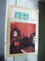
1975年 書評書目出版社 238頁 |
1981年9月 爾雅出版社 32開 / 223頁 |
| 《賣牛記》-兒童小說集 | ||
| 兒童小說。琦君看似輕柔的筆觸，蘊含人性的光明與良善，深含人類最原始、最純真的情感，娓娓道出超越功利的更高價值－－愛，企盼重新喚起人性中失落已久的美好。 | ||
1966年9月 臺灣書店 20開 / 76頁 |
2004年8月 三民出版社 25開 / 188頁 |
|
| 《琦君小品》-小品文集 | ||
| 琦君的作品向以溫暖敦厚著稱，這本小品文集，內容包含了她各式各樣的創作形式：清新流暢的散文，紀錄了對生活的回憶與雜感。 | ||
1966年12月 三民書局初版 40開 / 228頁 |
2004年2月 三民書局二版 25開 / 290頁 |
|
| 《繕校室八小時》-短篇小說集 | ||
| 書中的十篇故事，皆以小說體裁寫成，有作者自創的故事，也有真實的故事。其中的「長溝流月去無聲」曾被譯為韓文，在韓國的刊物上刊載。 | ||
1968年1月 臺灣商務印書館 40開 / 186頁
|
||
| 《老鞋匠與狗》-兒童小說集 | ||
| 琦君的兒童文學創作。作品有琦君對良善人情的稱頌 | ||
1969年6月 臺灣商務印書館 40頁
|
||
| 《紅紗燈》-散文集 | ||
| 記憶中一盞古樸的紅紗燈，那是外祖父親的手為她糊的。無論哀傷或歡樂，數十年的生活經歷，似乎被凝縮在溫馨的燈暈裡，更化作力量，給予她信心與毅力。 | ||
1969年11月 三民書局 初版 40開 / 218頁 |
2002年6月 三民書局 二版 25開 / 244頁 |
|
| 《七月的哀傷》-短篇小說集 | ||
| 本書收錄十篇短篇小說，其中的「阿玉」、「清明劫」是作者最偏愛的作品，裡面的人物一直讓作者深深懷念。 | ||
1971年11月 驚聲文物供應公司 32開 / 198頁 |
||
| 《三更有夢書當枕》-散文集 | ||
| 作者一貫地以樸質平易近人之筆，寫他對親人、師友的懷念；童年、鄉土的眷戀，日常瑣事的感受，文字如風行水面，而自見功力，尤其透出東方人真摯、溫厚的情操。 | ||
1975年7月 爾雅出版社 32開 / 216頁 |
||
| 《琦君自選集》-散文小說詞作合集 | ||
| 琦君自選其創作的小說、散文、詞共三種，另前附有琦君小傳。 | ||
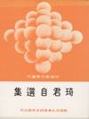
1975年12月 黎明文化公司 32開 / 262頁 |
||
| 《桂花雨》-散文集 | ||
| 細細品讀《桂花雨》這本書，彷彿坐上了時光機，來到了民初時期。本書共分為七個篇章，談作者琦君自己、談親如雙胞胎的姐姐、談父親、談母親、談長工阿榮伯……每一個小故事，都訴說著通達人心深處的相思之情。 | ||
1976年12月 爾雅出版社 32開 / 234頁 |
 2002年7月 格林文化 20*20 cm / 84頁 |
|
| 《細雨燈花落》 | ||
| 散文大家思果認為琦君的文章最富人情味，充滿至情，就像落花一片天上來。繼「三更有夢書當枕」、「桂花雨」之後，琦君在「中華副刊」上的專欄「龍吟集」一年多來，共得六十餘篇，現結集成冊，或追思懷舊，或生活偶感，在在使人愛不釋手。 | ||
1977年7月 爾雅出版社 初版 32開 / 185頁 |
2005年2月 爾雅出版社 二版 25開 / 214頁 |
|
| 《讀書與生活》-散文集 | ||
| 琦君是個「說童年」的魔法師，任何兒時回憶、故鄉景物經由她筆尖輕點，都變得生動奇妙了，《讀書與生活》則將讓你認識不一樣的琦君。在「讀書」中，琦君以中國文學科班的身分引領讀者閱讀文學作品，感受文學世界中的細膩情感。在「生活」裡，琦君以溫厚的語調，娓娓道出對生活、對時事的感懷，以及對子女的愛護，不論家事、國事還是天下事，無處不可感受到她的溫柔關懷。你想更了解琦君嗎？且隨著她一起讀書，一起生活；一起明善心，見真情。 | ||
1978年1月 東大圖書公司 25開 / 201頁
|
||
| 《千里懷人月在峰》-散文集 | ||
| 六十一年春，作者應邀訪美以後，斷斷續續寫過十多篇雜感，大都是所接觸的人物，以及美國社會人情的記述。為了外子調美工作，作者以眷屬身分，於去秋再度來美，家居歲月，與前次的到處旅遊訪問、身心上感受全然不同。 | ||
1978年9月 爾雅出版社 32開 / 243頁 |
||
| 《與我同車》-散文集 | ||
| 這是一本情理交溶的琦君小品，她以智慧之筆寫旅居海外的所見所聞。說理處，洞察世事，人情練達；敘情時溫柔蘊藉，在言與未言間餘味無窮。在她話家常的筆下，海外遊子情懷、生活點滴，棖觸萬端；異國風物，如在眼前；她記憶中有趣的人物，更是栩栩如生，令人莞爾。在平易中感受一片溫馨的親情、友情以及夫婦之情。 | ||
1979年3月 九歌出版社 32開 / 239頁
|
||
| 《錢塘江畔》-短篇小說集 | ||
| 除了詩情畫意之外，勾起多少遊子的相思情懷，散文的琦君，早年其實是寫小說起家的，或許是她的散文寫得太好，讀者反倒忽略了她的小說。 | ||
1980年4月 爾雅出版社 初版 32開 / 192頁 |
2004年10月 爾雅出版社 二版 25開 / 313頁 |
|
| 《留予他年說夢痕》-散文集 | ||
| 《留予他年說夢痕》為琦君寫作生涯中的第十一本散文集，收最近小品二十餘篇，包括對於兒時故鄉的回憶，和海外遊蹤的記述，人情醇美，溫柔敦厚，文筆更是洗鍊自然，晶瑩清澈，典雅雋永，寓文學的哲思於明朗平淡之中，為當今中國散文中最嚴密深廣的代表作。 | ||
1980年 10月 洪範書店 32開 / 203頁 |
||
| 《詞人之舟》-詞論 | ||
| 「詞人之舟」是一本溫暖有情味的詞人詞作欣賞入門，全書共收溫庭筠、李後主、蘇軾、李清照、陸游、朱淑真等十三位詞家的作品，與一般冷硬教課書式的評論大異其趣。 | ||
1981年4月 純文學出版社 32開 / 248頁 |
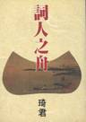
1996年3月 爾雅出版社 32開 / 269頁 |
|
| 《琦君說童年》 | ||
| 這是散文作家琦君專為少年朋友寫的，共二十篇各式各樣的童年故事，還包括了我們的老總統「蔣公的童年」。因為琦君和蔣公的家鄉同是浙江，所以其風土、人情，由琦君寫來特別親切。少年朋友讀這本書，不但故事好聽，而且知道許多故事的來源，也學到許多做人的道理。再加上富於童心的書家陳朝寶插圖，更是完美。 | ||
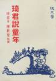
1981年8月 純文學出版社 32開 / 190頁 |
1996年8月 三民書局 25開 / 178頁 |
|
| 《母心似天空》 | ||
| 琦君的散文已到了爐火純青的地步，信筆拈來，都是文章，揮灑之間，猶如無縫天衣，琦君實在稱得上是我們國寶級的作家。全書三十餘篇，珠玉琳琅，滿室生春。誠如作家子敏所說：『琦君的筆調是愉快的，語言節奏是年輕的，處處都流露了機智和風趣。 | ||
 1981年12月 爾雅出版社 32開 / 222頁 |
||
| 《燈景舊情懷》-散文集 | ||
| 此書為琦書繼《留予他年說夢痕》後由洪範印行的新作，收最近散文小品三十篇，回憶髫齡及少女時代的往事，記述眼前街鄰社會的人情，感觸兼及小動物和草木的生息榮枯，溫柔醇美，平淡雋永 | ||
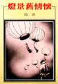
1983年2月 洪範書店 32開 / 196頁 |
||
| 《水是故鄉甜》-散文集 | ||
| 琦君的名字公認應與中國散文連結在一起。隨著時代和環境的變遷，作品動人的魅力是萬物皆有情，眾生都可愛，溫柔敦厚，以有限到無限。 | ||
1984年5月 九歌出版社 初版 32開 / 239頁 |
2006年6月 九歌出版社 二版 25開 / 224頁 |
|
| 《此處有仙桃》-散文集 | ||
| 永懷童心的琦君，用清澈透明的語言，勾畫出的舊日情懷和旅居的生活點滴，在琦君筆下，展現出醇厚的鄉土情味，栩栩如生，如在眼前。讀時如飲甜漿，如品美味。從書中更可看出她靜觀下的異鄉情懷，如何輕觸人們的心弦，引起共鳴。 | ||
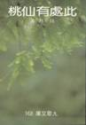
1985年6月 九歌出版社 初版 32開 / 255頁 |
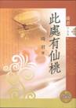
2006年6月 九歌出版社 紀念珍藏版 25開 / 256頁 |
|
| 《琦君寄小讀者》-散文集 | ||
| 自稱「老頑童」的女作家琦君旅居美國後，非常懷念臺灣，因此給國內的小讀者寫信，也成了他旅居生活中一分心靈的享受。他的美依封信都是一篇有趣的真實故事。不論是出國旅遊、小動物、小花小草或是琦君自己在國外出洋相等瑣碎小事，從她溫厚、有趣生動又能啟發童心的筆端寫來，溫馨又感人。另外琦君還信手拈來畫了十餘幅畫，給小讀者逗樂。這些小貓小人在他這位「非畫家」筆下，充滿了童稚之趣。 | ||
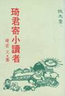
1985年6月 純文學出版社 32開 / 219頁 |
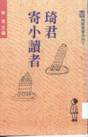
1996年8月 建行文化出版 新25開 / 183頁 |
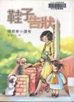
2004年8月 九歌出版社 更名《鞋子告狀—琦君寄小讀者》 25開 / 173頁 |
| 《玻璃筆》-散文集 | ||
| 本書是琦君跨越時空、別出心裁之作。溫潤晶瑩的小品，在每篇千字左右的文章中，她以行雲流水般的筆觸，捕捉靈感的吉光片羽，表現出中國特有的人情味，悲憫人性的弱點。諸如夫婦之情、朋友之愛，以及民胞物與、世界大同的精神，均能躍然紙上，引起廣大讀友的共鳴。 | ||
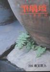
1986年11月 九歌出版社 32開 / 251頁 |
||
| 《琦君讀書》-評論集 | ||
琦君讀書見解獨到，從細微處著眼，為讀者打開另一扇窗，開拓心靈視野。筆觸輕靈，使人悠遊於讀書之樂。或褒或貶，均見一代文人之風範。 | ||
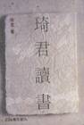
1987年10月 九歌出版社 32開 / 285頁
|
||
| 《我愛動物》-評論集 | ||
| 琦君此書為其所撰專題小品的選集，近四十篇文章都以人和小動物的親密關係為主題，表達她對小動物無窮的愛，感人至深。 | ||
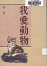
1988年3月 洪範書店 32開 / 212頁
|
||
| 《青燈有味似兒時》-散文集 | ||
| 本書計分「懷舊篇」與「生活篇」二卷，篇篇有真意，雋永而引人深思。 | ||
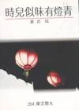
1988年7月 九歌出版社 初版 32開 / 250頁 |
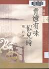
2004年10月 九歌出版社 二版 25開 / 240頁 |
|
| 《淚珠與珍珠》-散文集 | ||
| 琦君的名字就是散文的代稱，她以最精簡、優美的文字，表達最真摯、深沉的感受，幽默雋永，深入心田。伴隨無數的讀者成長。她說婚姻、談生活，哀矜眾生可憐復可惡，檢視人性的美好與缺陷，義正詞嚴又極富人情味。 | ||
 1989年10月 九歌出版社 32開 / 230頁 |
||
| 《文與情》-散文小說合集 | ||
| 本書作品從日常生活中隨手拈來，自也透露出作者駕馭文字的純熟工夫。另外並有琦君向少執筆的小說及她第一次執筆的劇本，可看出作者對文字掌握的多面能力。 | ||
 1990年8月 三民書局 新25開 / 188頁 |
||
| 《母心‧佛心》-散文集 | ||
| 琦君寫作五十年來的重要作品之一，她娓娓敘說母親的言行與生活點滴，更以悲憫有情之筆寫世間萬物，不論一草一木、一言一行，深刻動人，而膾炙人口的懷舊記憶篇章，更洋溢醇厚的人情之美。 | ||
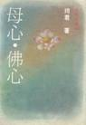
1990年10月 九歌出版社 初版 32開 / 237頁 |
 2004年12月 九歌出版社 二版 25開 / 222頁 |
|
| 《一襲青衫萬縷情》-散文集 | ||
| 《一襲青杉萬縷情》是琦君將所有描述中學生活回憶的文章全部蒐集在一起，有些是新寫，有些是舊作。 | ||
 1991年7月 爾雅出版社 32開 / 235頁
|
||
| 《橘子紅了》-小說集 | ||
| 琦君著名的長篇小說。小說裏珍藏著她魂牽夢縈的江南，承載著她如許深厚的記憶與懷念；琦君在為逝去的一個時代造影，書裏的四個故事，溫馨中都透著幽幽的愴痛。 | ||
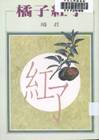
1991年9月 洪範書店 32開 / 194頁 |
||
| 《媽媽銀行》-散文集 | ||
| 這是琦君的短文精品，以有限的篇章表現無限的情意，舊時代的溫馨生活，新社會的種種有情，懷人、記事，無一不令人擊節讚賞，字字句句均足以讓人再三回味。 | ||
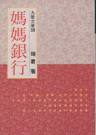
1992年9月 九歌出版社 初版 32開 / 229頁 |
 2005年5月 九歌出版社 二版 25開 / 204頁 |
|
| 《萬水千山師友情》-散文小說合集 | ||
| 琦君秉至真情懷，以至美之筆，從對師友之情的感念寫到對兒時種種的回憶；從異國生活與日常點滴談到她四十年來寫作過程與理念。本書另收錄琦君數篇小小說，另有一番風味。 | ||
 1995年2月 九歌出版社 初版 32開 / 234頁 |
 2006年6月 九歌出版社 紀念珍藏版 25開 / 240頁 |
|
| 《母親的書》-散文集> | ||
| 當代散文名家，其童年雜憶與家鄉懷舊，感情真摯，溫馨動人，筆墨平淡自然，但餘意不斷，極見功力，本書所收七篇散文，均為琦君飲譽文壇之代表作。 | ||
 1996年9月 洪範書店 50開 / 54頁 |
||
| 《永是有情人》-散文集 | ||
| 琦君以赤子之情寫半世紀前家鄉風土人物，栩栩如生，悲欣交集；用慈母心慨眾生萬物，可親可愛，有情有義。 | ||
 1998年2月 九歌出版社 初版 32開 / 220頁 |
 2005年12月 九歌出版社 二版 25開 / 224頁 |
|
| 《琦君散文 >選(中英對照)》-散文選 | ||
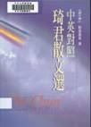
2000年6月 九歌出版社 譯者 鮑端磊等 25開 / 328頁 |
||
| 《母親的金手錶》-散文集 | ||
| 從難忘的往事、母親的手藝與生活隨筆，將時空定格，與琦君一起走進有情世界：繽紛的童年、中國婦女質樸溫煦的剪影，以及隨處可掬的人間美善。 | ||
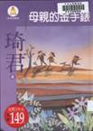
2002年1月 九歌出版社 21.6x15cm / 286頁 |
||
| 《夢中的餅乾屋》-散文集 | ||
| 本書是琦君在「三度空間」浮遊心情的寫照，除了憶往懷舊，也寫旅居生活，筆走不同時空。 | ||
 2002年3月 九歌出版社 21.6x15cm / 283頁 |
||
| 《玳瑁髮夾》-散文集 | ||
| 琦君細膩多情的文字風格，透過童稚的眼睛，刻畫出六個真實情感、悲喜交織的故事。書中選錄的《玳瑁髮夾》憶起師長當年的教誨、《母親的金手錶》喚起對母親的懷念、《我的蚌殼棉鞋》道盡姨婆的慈愛、《寶松師傅》描繪一個樂天知命、勤奮向上的剃頭師傅、《碎了的水晶盤》訴說異國女子無奈接受婚姻的破滅、《阿標叔》描寫兩個長工宛如手足的情誼。 | ||
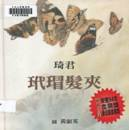
2004年9月 格林文化 20*20 cm / 72頁 |
||